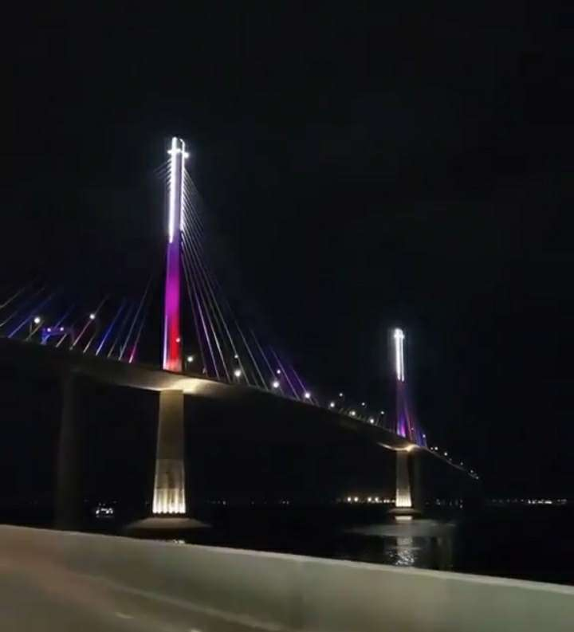

The Mesmerizing CCLEX Bridge: Connecting Cordova and Cebu in Imposing Style
Introduction: A ground-breaking project that represents the Philippines' dedication to development and seamless communication is located in the country's center. The stunning Mactan Channel is crossed by the Cordova-Cebu Link Expressway (CCLEX) bridge, an engineering wonder and a symbol of unification. Let's explore the historical significance and breathtaking details of this famous building. The CCLEX bridge is a symbol of development, unity, and connectedness in addition to being a mode of transit. It has changed the lives of those living in Cordova and Cebu and stands as a powerful symbol of the Philippines' dedication to development. This architectural marvel is a source of pride for the country and a doorway to innumerable chances for progress and wealth, seamlessly mixing functionality, safety, and aesthetics.